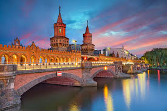

Berlin je grad koji zaista morate posetiti. Od rušenja Berlinskog zida 1989. godine, grad neprestano „buja“ u svakom smislu. Više nije izolovan od komunističke Istočne Nemačke; sada je to glavni grad jedinstvene Nemačke. Ono što je predstavljalo drastičan kontrast – Zapadni i Istočni Berlin – sada je izbrisano. Nekadašnji Istočni Berlin je deo grada gde ćete verovatno provesti više vremena. To je bilo, i još uvek je, srce grada u koje stižete kad krenete na istok od Bradenburške kapije i Parlameta, duž Ulice Lipa, predivnog bulevara, do Muzejskog ostrva, Berlinske katedrale i Aleksanderplaca. Mnogo zanimljivih četvrti koje obavezno treba posetiti u Berlinu se nalazi na samo nekoliko ulica severno ili južno od ove trase.
Potsdamski trg je dobro mesto da se počne obilazak, jer predstavlja preporod Berlina. Mnoge građevine na njemu su delo najboljih evropskih arhitetkti. Nekada pust deo grada, gde se nalazio Berlinski zid, sada je ponovo „živ“ i pun različitih firmi, tržnih centara, prodavnica, restorana, barova, zabavnog parka i kao spomenik je ostao deo Berlinskog zida ispisan grafitima.
Ako krenete severno, naćićete se među 2711 spomen-ploča, mestu koje podseća na groblje. To je Memorijalno mesto žrtvama Holokausta i mesto na kom se mogu dobiti informacije o pobijenim Jevrejima u Evropi. Ako pređete ulicu Ebertštrase, naćićete se u Tirgatenu, velikom urbanom parku koji se proteže od Bradenburške kapije do Berlinskog zoo vrta.
Sagrađena 1791. godine, trijumfalna Bradenburška kapija sada spaja nekadašnji stari i novi deo grada. Naspram kapije se nalazi Pariski trg, još jedan elegantni trg okružen modenim zgradovima poput hotela Adlon, britanske i američke ambasade.
Aleksanderplac je nekada bio trg na kom je Hitler održavao svoje mitinge, a danas je ogromni, moderni tržni centar i velika stanica za autobuse, tramvaje, podzemnu i tzv. „S-železnicu“. Tu se nalazi i Berlinski televizijski toranj, visok skoro 365 metara i najviše je zdanje u Berlinu.